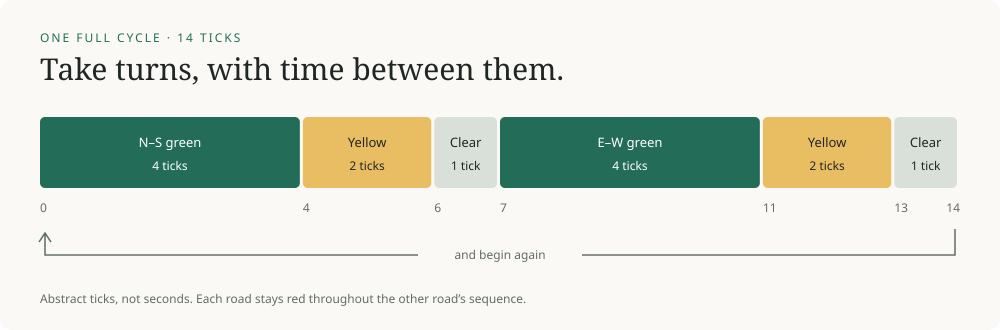

The promise of a green light
In this article
A green light is a small promise about what everyone else has been told.
When a light changes, we usually think about the car in front of us. We rarely think about the controller inside the cabinet at the corner. Somewhere in that box, a decision has been made about which traffic can move and which traffic has to wait. We act on it without reading the program.
I wanted to understand what it would mean to prove that this decision works. The answer gets interesting before the intersection gets complicated. A controller can avoid conflicting greens perfectly and still leave everyone stranded. It can keep traffic moving and still neglect one road forever.
So I built a small intersection with four controllers, along with a program that checks every state each controller can reach. The exercise separates three questions that are easy to compress into one: can something bad happen, will something useful happen, and how should the available time be divided?
Video transcript
Both green: the controller reaches conflicting greens in one step. Always red: neither road moves, although the conflicting-green check passes. North priority: continuous north–south demand holds green indefinitely while east–west waits. Take turns: the controller cycles through green, yellow, and red clearance for each road. The exhaustive check finds 14 reachable states and a maximum of 10 ticks to green for either road. Changing the north green to eight ticks raises the east–west bound to 14 ticks.
The first promise#
Start with two roads crossing at right angles. Allow only straight-through traffic. Treat north–south as one movement and east–west as another. There are no turns or pedestrians yet, and the lights change together at discrete ticks. This is a deliberately small model, not a reconstruction of a particular junction.
The first requirement is easy to state: the two crossing movements must never both have green. The first controller breaks that rule immediately. It begins with both roads stopped and then gives both roads green. A single step exposes the failure.
Now replace it with a controller that keeps everything red. The same requirement holds for its entire lifetime. There is no moment at which the crossing movements have green together. There is also no moment at which anyone is invited to move.
This is the distinction between safety and liveness in program verification. A safety property rules out an unwanted event. A liveness property requires eventual progress. Neither implies the other.1Leslie Lamport, “Proving the Correctness of Multiprocess Programs” (1977), sections II–III. For this model, I use “safety” narrowly: no conflicting greens. It is not yet a claim that vehicles cannot collide.
A road can wait forever#
The third controller sounds more reasonable. Let north–south keep green while its detector reports traffic. Once the demand disappears, move through yellow and red clearance, then serve east–west.
The failure is a busy north–south road. Its detector can remain active indefinitely. East–west can have a car waiting the entire time, and the rule still never gives it a turn. The signals avoid conflicting greens. The system is active. One road is being ignored.
A short animation cannot establish that something will wait forever. It can only show that it has waited so far. But the program can find a state that returns to itself: north green, its minimum countdown finished, north demand still present. Repeat that input and the same state repeats without end. That loop is an infinite counterexample described in a finite space.
Actual actuated signal control has more structure than this intentionally defective rule. For example, maximum-green timing limits an extension in the presence of conflicting demand. The FHWA timing manual discusses this alongside minimum green, detector calls, and other timing parameters.2FHWA, Traffic Signal Timing Manual, chapter 5 (2008, archived), sections 5.2–5.3. Used for the control concepts, not current timing recommendations.
A promise we can check#
The fourth controller follows a fixed cycle. North–south gets four green ticks, two yellow ticks, and one tick with both roads red. East–west then gets the same sequence. A full cycle takes fourteen ticks. These numbers make the example easy to inspect; they are not recommended traffic timings, and a tick has no assigned duration in seconds.

There are two ways to inspect the guarantee. The short mathematical argument starts at the initial state: at most one road is green. Every permitted transition preserves that fact. Repeating a transition cannot introduce a conflicting green if none of the transitions can introduce one.
Progress has its own argument. Every countdown is finite, every completed phase advances to the next, and the clock keeps ticking. The controller therefore returns to both green phases. Starting at a tick boundary, the longest wait for north–south green is its own yellow and clearance, all of east–west's green, and east–west's yellow and clearance: 2 + 1 + 4 + 2 + 1 = 10 ticks. The other road has the same bound.
The executable check reaches the same conclusion by exploring the complete graph. It visits all fourteen reachable states and all four detector-input combinations at each state, giving 56 input-labeled transitions. For this controller, the inputs do not change the next state. The checker still considers them.
To check progress, it looks for a reachable loop that avoids a road's green. If such a loop exists, it supplies a counterexample. If none exists, it calculates the longest path to green. The animation and checker use the same transition function; the arithmetic above provides a separate way to inspect the result.
| Controller | No conflicting greens | Both roads get green |
|---|---|---|
| Both green | Fails | Yes, unsafely |
| Always red | Passes | No |
| North priority | Passes | Not guaranteed |
| Take turns | Passes | Within 10 ticks |
Change the promise#
Try increasing north–south green from four ticks to eight. The no-conflicting-green property still holds. Both roads still get a turn. But east–west's longest wait for another green increases from ten ticks to fourteen.
The two proofs have survived a change that makes someone's experience worse. That is where “works” becomes a question about objectives. Equal green time, more time for the busier road, and a short maximum wait are different choices. An optimization program needs to be told which objective matters and which constraints it must respect.
Open the experiment in its own window. The page works with a keyboard and starts paused. On a small screen, the separate window gives the controls more room.
Even the ten-tick guarantee needs careful wording. It bounds time until a green opportunity. It does not bound how long a particular driver waits in a queue. A road can receive green regularly while more traffic arrives than it can discharge. Our model has no queue lengths, vehicle speeds, or downstream blockage, so it cannot answer that question.
The cabinet outside the model#
A real intersection adds another gap: the state in the program and the signal displayed on the street are different things. Lamps, wiring, power, and other equipment have to carry out the decision.
Signal cabinets include malfunction monitoring equipment, often called a conflict monitor or malfunction management unit. It looks for conditions such as incompatible signal indications and improper voltages. A detected fault can trigger a fallback such as flashing operation. The FHWA's cabinet overview describes this monitoring alongside the controller itself.3FHWA, Traffic Signal Program Handbook (2023), printed pp. 100 and 113–114.
That extra layer matters because a proof about commanded colors cannot, by itself, establish what a damaged output circuit displays. Nor does a proof about colors establish that the crossing is empty. A vehicle may still be clearing it; a pedestrian may be crossing; a driver may disregard a signal. Clearance timing and physical behavior require a richer model and evidence about the actual site.
I have not established that the intersection near my house, or any particular deployed controller, has been formally verified. What this small example provides is a way to ask a more precise question. Which unwanted event has been ruled out? What progress is guaranteed? Under which assumptions?
The next green light will still look ordinary. Behind it is a chain of decisions about permitted movements, waiting, timing, and failure. Understanding even a small part of that chain makes the promise more specific, and easier to examine.
The source repository contains the model, exhaustive checker, tests, recording script, and assumptions. The machine-readable report records the default results. This is an executable explainer, with no claim of a new research result.
Cite this essay
@misc{somu2026greenlight,
title = {The promise of a green light},
author = {Somu, Arya},
year = {2026},
url = {https://aryasomu.com/writing/the-promise-of-a-green-light.html}
}